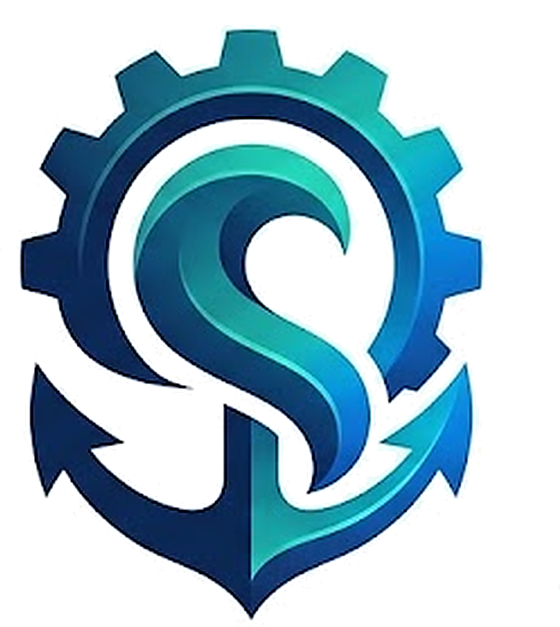

01NAVIGATOR'S INSIGHT
항해사의 시선
실제 항해와 기관실의 흐름을 이해하고, 현장에서 필요한 제품을 선택합니다. 조타실의 의도와 기관실의 반응이 자연스럽게 이어질 수 있도록 실용적인 솔루션을 제공합니다.
현장 중심 · 실용성 · 연계

장바구니 0ABOUT SEONAUTICS
SEONautics는 선박 엔진, 정비 부품, 기관 정비공구를 연결해 선박이 안정적으로 운항할 수 있는 기반을 제공하는 해양 정비 솔루션 기업을 지향합니다.

OUR MISSION
멈추지 않는 항해를 위한 든든한 기반이 되어, 해양 산업의 안전과 발전을 이끕니다.
CORE VALUES
바다에서 실제로 작동하는 품질을 기준으로 제품을 고르고, 더 안전하고 오래가는 항해를 만드는 것을 목표로 합니다.
실제 항해와 기관실의 흐름을 이해하고, 현장에서 필요한 제품을 선택합니다. 조타실의 의도와 기관실의 반응이 자연스럽게 이어질 수 있도록 실용적인 솔루션을 제공합니다.
정밀한 부품과 체계적인 정비는 선박의 수명을 연장하고 불필요한 자원 낭비와 오염을 줄이는 데 도움을 줍니다. 친환경 선박 기술의 발전에도 함께 대응합니다.
망망대해에서는 작은 이상도 운항에 영향을 줄 수 있습니다. 그래서 부품과 공구의 품질, 정밀성, 내구성을 중요하게 생각하며 신뢰할 수 있는 기준을 추구합니다.